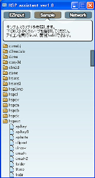
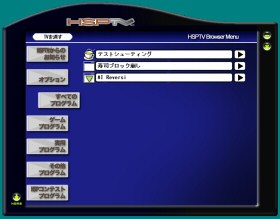

HSP : Hot Soup Processor ver3.6 / onion software 1997-2021(c)

HSP3 Windows
- Overview
- Operating environment
- Package structure
- First time use
- Installation
- Uninstall
- Demonstration
- Changes from HSP3.5
- Script Editor
- HSP Assistant
- HSPTV browser
- HSP Docs Library(HDL)
- Copyright and license
Overview
HSP Windows is a development environment for HSP3 that runs on Microsoft Windows.
It is the most standard development environment in the HSP3 family that can be programmed by script.
This document describes features and startup methods that are specific to the Windows version.
See HSP3 Overview for a basic explanation.
Operating environment
- Microsoft Windows 2000, XP (including NT4.0 or later), Vista, 7, 8, 8.1, 10
HSP3.6 works on almost any Windows running 32-bit applications.
We have also confirmed that it works on Windows 7, 8, 8.1, 10 and Vista 64bit (x64) versions.
The standard "HSP Script Editor" does not work on versions prior to Windows 2000. If you use the simplified editor (hsed3le.exe), you can use the standard HSP functions. It can also be run on Windows 95 with Internet Explorer 4.0 or later installed, but it is not covered by the warranty. On Windows other than the Japanese version, garbled characters may occur in the standard "HSP script editor". In that case, you can select the corresponding tool from the HSPTV! Site Download List . I will.
You need a display with a resolution of 640 x 480 or higher and a display capable of displaying 256 colors or higher. The amount of memory required varies depending on the size of the image to be displayed.
HSP works by itself. No additional DLLs or runtimes need to be installed for standard functionality.
Package configuration
The HSP3.6 full set is based on the OpenHSP technology released as open source. It is configured so that you can easily enjoy programming on Windows. Starting with "HSP Script Editor" for writing scripts Tool "Peas" that allows you to visually check the operation of the program, Equipped with "HSP TV browser" that allows you to enjoy user-created content, It is an integrated development environment that can be widely used in all situations from beginners to advanced users.
First time use
If you are new to HSP3, please read and start using the programming manual after installing the full package.
Explains the basic mechanism and usage of HSP3. If you are new to programming, please also see Introduction to HSP .
If you are already using a previous version, HSP3.6 New Feature Highlights or HSP3 Update Guide > Will be helpful.
Install
The full set of HSP3.6 is available in a version with an installer and a compressed file version. Launch the installer or unzip the hsp36 folder to any directory You will be able to use it. (The recommended directory is "c: \\ hsp36")
If HSP3.6 or earlier is already installed, uninstall the previous one We recommend that you then install the new version. However, the HSP3.6 installer does not add files other than the installation folder, so It does not conflict with previous versions. (It is also possible to use it at the same time as the past version.)
On Windows 2000 or later (XP, Vista, 7, 8, 8.1, 10, etc.), write permission is required for the HSP3.6 installation folder. Even if you install in the default directory of the installer (/ HSP35) Make sure to run it as a user with administrator privileges.
If you are using Windows Vista or later, you can use the User Account Control (UAC) function. Administrator privileges may be required during installation. In this case, please continue the process with administrator privileges.
Uninstall
If you have installed HSP with the installer, you can remove the program with the attached uninstaller. If you installed it manually, you can uninstall it by deleting all the folders.
If HSP is installed under Program Files on Windows Vista or later OS Additional data from the HSPTV browser and document viewer may be left in the virtual store. By deleting the following data together, you can uninstall including additional files.
C: \\ Users \\ (user name) \\ AppData \\ Roaming \\ Hot Soup Processor HSP installation folder under C: \\ Users \\ (user name) \\ AppData \\ Local \\ VirtualStore
The standard script editor stores the settings in the following registry by default. If necessary, please delete it here as well.
HKEY_CURRENT_USER\Software\OnionSoftware\hsed3_3
Demonstration
First, from the "Start Menu" program group, "Hot Soup Processor 3.6"-> "Sample Demo" Try to start. HSP sample demo starts. (If the menu is not registered, try starting HSP3DEMO.EXE in the expanded directory.)
This demo is actually working with HSP. By selecting an item from the menu You can see various demonstrations.
Also, from the program group of "Start Menu", "Hot Soup Processor 3.6"-> "HSP Assistant" By selecting. The "HSP Assistant" for viewing HSP sample scripts will start. In "HSP Assistant", just press the "Sample" button and then select the file You can execute and browse immediately.
Changes from HSP3.5
In HSP3.6, the functions have been modified and added so that they are upward compatible. Scripts that worked on HSP3.5 can almost always be run on HSP3.6 without modification. For more information, see HSP3.6 New Feature Highlights .
HSP3 is the latest version of HSP, which has undergone a major overhaul of previous specifications and programs. While inheriting the assets such as friendliness, ease of learning, and simplicity cultivated up to ver2.61 It has been developed to provide an environment with a wider range of applications and versatility.
The changes from the previous version and the procedure for migration See HSP3 Update Guide .
Script Editor
HSP Script Editor (HSED3.EXE) makes it easy to edit and execute HSP scripts. It is a dedicated text editor that you can do. You can write a script directly and execute it by pressing the F5 key without any extra preparation.
It is also equipped with a wealth of support functions such as keyword help reference (F1 key) and simple input.
An English script editor (HSED3_EN.EXE) is also included for users of English Windows. You can use it like a normal script editor except that the interface is in English.
For more information on how to use the script editor and script details, Please read the Programming Manual .
HSP Assistant
With HSP Assistant, you can search for instructions, refer to sample scripts, get network materials, and more.
"Hot Soup Processor 3.6"-> "HSP Assistant" from the "Start Menu" program group Select to launch HSP Assistant. (If the menu is not registered, try starting HSPAT.EXE in the expanded directory.)
For more information about HSP Assistant, please refer to Separate Manual (hspat.htm) .
HSPTV browser
HSPTV browser makes it easy to get online HSP information and the latest software You can download and enjoy it.
From the "Start Menu" program group, select "Hot Soup Processor 3.6"-> "HSP TV Browser" Select to launch the HSPTV browser. (If the menu is not registered, try starting HSPTV.EXE in the expanded directory.)
The HSPTV browser connects to the network and automatically updates with the latest information. Be sure to connect to the network and check the settings.
For more information on the HSPTV browser, please refer to the separate manual (hsptv.htm) .
HSP Docs Library(HDL)

HSP Docs Library (HDL) is a browser for searching and browsing all HSP documents at once. A document viewer that can be used in place of the traditional help browser. HSP Docs Library (HDL) includes documentation and sample scripts as well as HSP help Integrated search and seamless linking improve script development efficiency.
From the "Start Menu" program group, select "Hot Soup Processor 3.6"-> "Document Browser". It is started by selecting. (If the menu is not registered, start HDL.EXE in the expanded directory.)
For more information about HSP Docs Library, please refer to Separate Manual (hdl_usage.htm) .
Copyright and license
The HSP3.6 full set is a composite package consisting of "HSP development system" and "additional components". The HSP development system is a central element of development and refers to the following items.
- HSP Script Editor (hsed3.exe, hsed3_en.exe, hsed3le.exe)
- Debug execution runtime (hsp3.exe, hsp3cl.exe, hsp3debug.dll)
- HSP Extended Runtime (hsprt, hsp3c.hrt, hsp3cl.hrt)
- HSP Code Compiler (hspcmp.dll)
- HSP3Dish system (hsp3dish.exe, hsp3dh.exe, hsp3cnv.exe)
- HSPTV browser (hsptv.exe)
- Peas editor (ahtman.exe)
Files included in the HSP development system can be freely attached, duplicated, reorganized, and redistributed under the BSD license. I can do it. In that case, please specify HSP license notation (hsplicense.txt) .
(This license does not apply to executable files created using HSP. It is applied only when the files included in the HSP development system are published as they are. For licenses related to the original software created by the user Please refer to the item " About the license of software made by HSP ". )
(Certification of license notation should include hsplicense.txt in the distribution or in the documentation Make sure to include the same content as hsplicense.txt. Use in companies and schools You can treat it as free of charge. )
The HSP development system is basically provided without warranty, but support for commercial use etc. is provided. If you contact onion software (onitama@onionsoft.net) by email, I will consider it.
The copyright of the HSP development system belongs to onion software. onion software does not guarantee any damage caused by this program. Use at your own risk.
Additional components are elements that assist development and enhance convenience, and refer to the following items. The copyrights and licenses of the additional components are different. For details, refer to each document.
- HSP Docs Library (see readme.txt in doclib / HSP Docs Library folder)
- d3module (see d3module.txt in the doclib folder)
- Artlet2D (see Artlet2D.txt in the doclib folder)
- SQLele (see SQLele.txt in the doclib folder)
- OBAQ plugin (see obaq.txt in doclib folder)
- HSPDX plugin (see hspdx.txt in doclib folder)
- HSPCV plugin (see hspcv.txt in doclib folder)
- HGIMG3 plugin (see hgimg3.txt in doclib folder)
- HGIMG4 plugin (see hgimg4.html in the doclib folder)
- HSPOGG plugin (see hspogg.txt in doclib folder)
- HSP3IMP plugin (see hsp3imp.txt in doclib folder)
The additional components shown below are copyrighted by onion software, You can freely attach, copy, reorganize, and redistribute it under the BSD license. Redistribution can be done for a fee or free of charge, and there is no obligation to display the copyright of onion software. For the original software distributed with the following additional components onion software does not claim copyright.
- HSPTV material data (/ hsptv) and its sample script
- HGIMG plugins (hgimg.dll, hgimgx.dll) and their sample scripts
- HSPDA plugin (hspda.dll) and its sample script
- HSPDB plugin (hspdb.dll) and its sample script
- HSPEXT plugin (hspext.dll) and its sample script
- HSP SOCK plugin (hspsock.dll) and its sample script
- HSPINET plugin (hspinet.dll) and its sample script
- HSPPRINT plugin (hspprint.dll) and its sample script
- HSP basic sample script (script in sample / basic folder)
- COM sample script (script in sample / comobj folder)
- Game sample script (script in sample / game folder)
- HGIMG sample script (script in sample / hgimg folder)
- HGIMG3 sample script (script in sample / hgimg3 folder)
- HGIMG4 sample script (script in sample / hgimg4 folder)
- HSPCL sample script (script in sample / hspcl folder)
- HSP3.6 sample script (script in sample / new36 folder)
- HSP3UTF sample script (script in sample / hsp3utf folder)
- HSP3Dish sample script (script in sample / hsp3dish folder)
- Screensaver sample script (script in sample / ssaver folder)
- Various HSP technical materials such as HSP programming manual (in doclib / hspsdk folder)
The files shown below are only allowed to be distributed for the full set of HSPs. Please note that copying, reorganization, and redistribution by itself are not permitted.
- HSP demonstration data file (data in sample / demo folder)